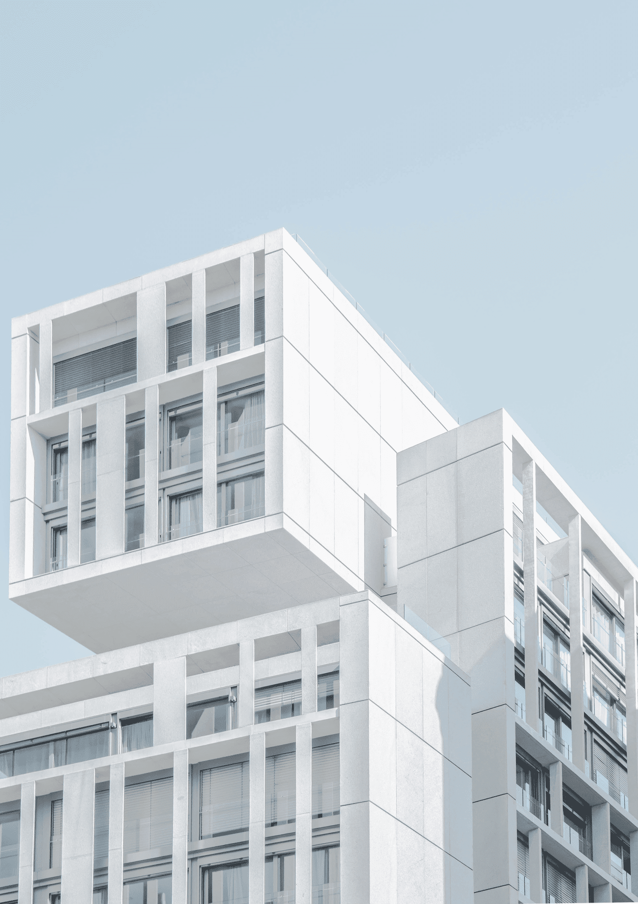
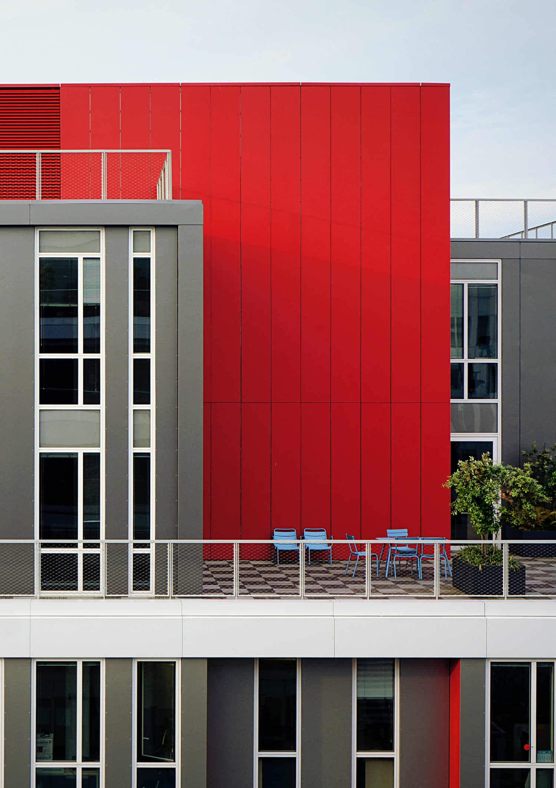

建設を変える
社会を変える
社会を変える

.Modern Monument 01
堂々としたスクリーンのような間口の背後には、温かく歓迎される室内空間があり、徐々に庭に向かって家を開放し、透明な背面のファサードで外を室内に取り入れることができるようになっている。私達のコントラストの構成は、古典的なミュンヘンの町家の新しい試みとなるような個性的な家を求めるクライアントの要望に応えています。

.Timeless Transparency 02
私たちは特徴的なY字型のプランと継ぎ目のないガラスの表皮を持つコンセプトを作り上げました。3つの翼の異なるプログラムは、太陽の動きに関連しています。壁は太陽光を反射し薔薇のような鮮やかな赤色を放ちます。建築物の高さの制限により、建築物の容積の半分を地下に置く必要があったので、日中の光を最大限に利用することは、より重要なことであった。
私たちは建築で社会問題のソリューションを提案します。
株式会社Prockは18年間、社会事業を主に安心・安全を軸に置いた建設業を行ってきました。「社会をより良くするにはどうすればいいのか」という問題提起を常に行い、目的達成のために日々熟考しています。